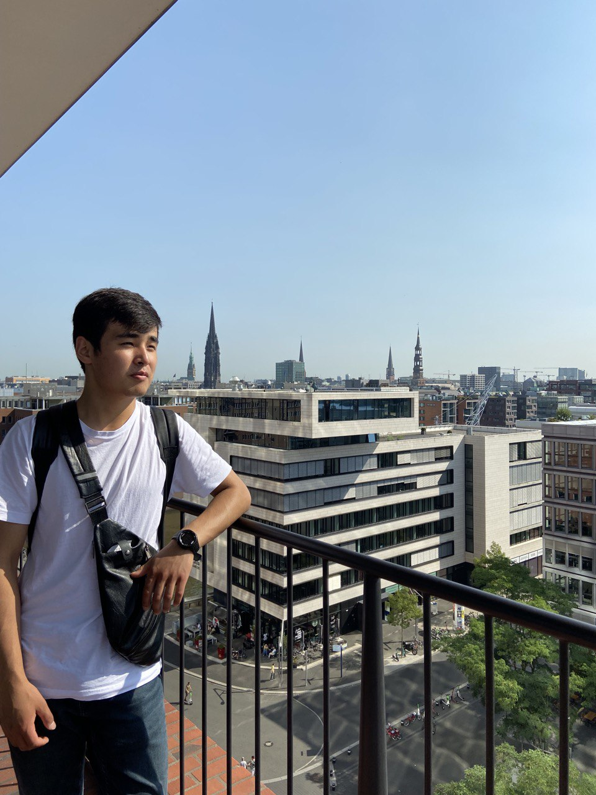
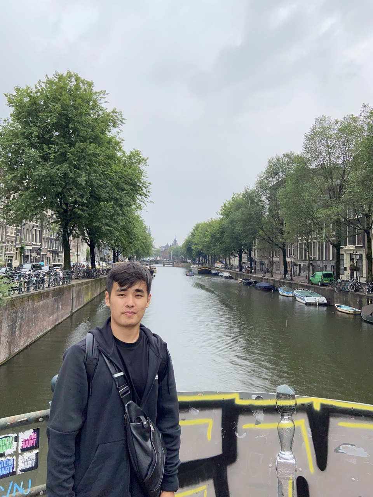

My Portfolio

Hi! My name is Sultan Bekmuratov, I am a Mobile Developer. Now I study at Ala-Too International University.
Main
Instagram
My email
My github account

My biography
I was born and grew in Osh. During all my childhood I lived in Osh. I went to school number 16 and after ny graduation I passed to Ala-Too International University. Now I am second year student of faculty CS.